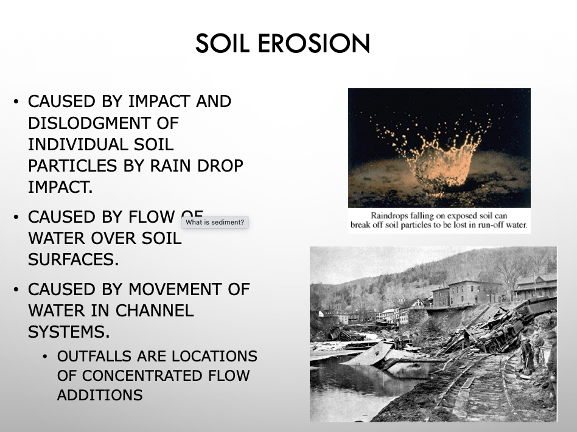
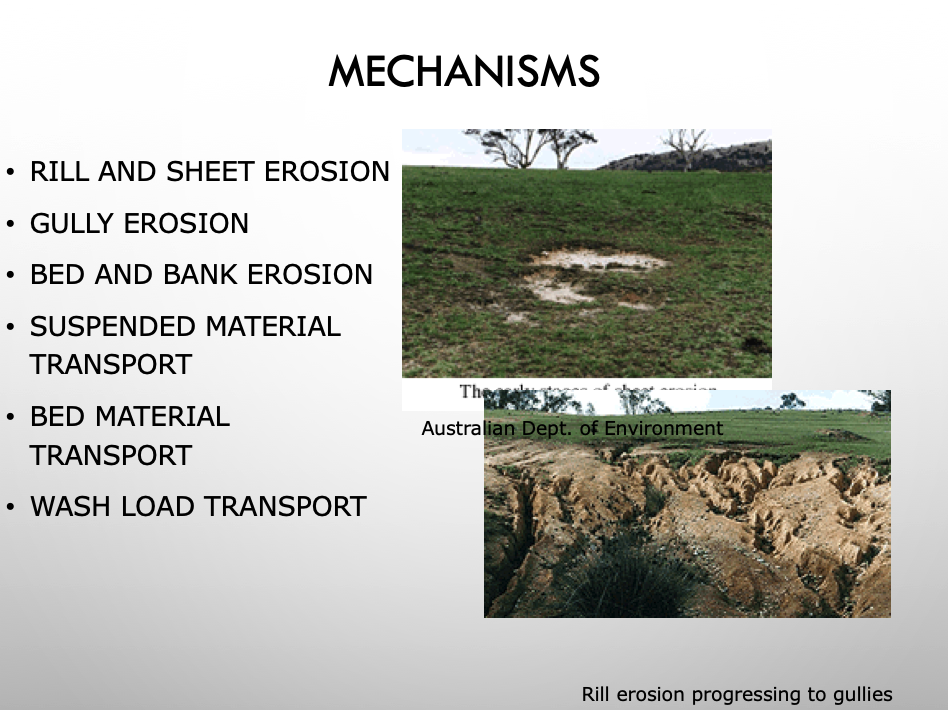
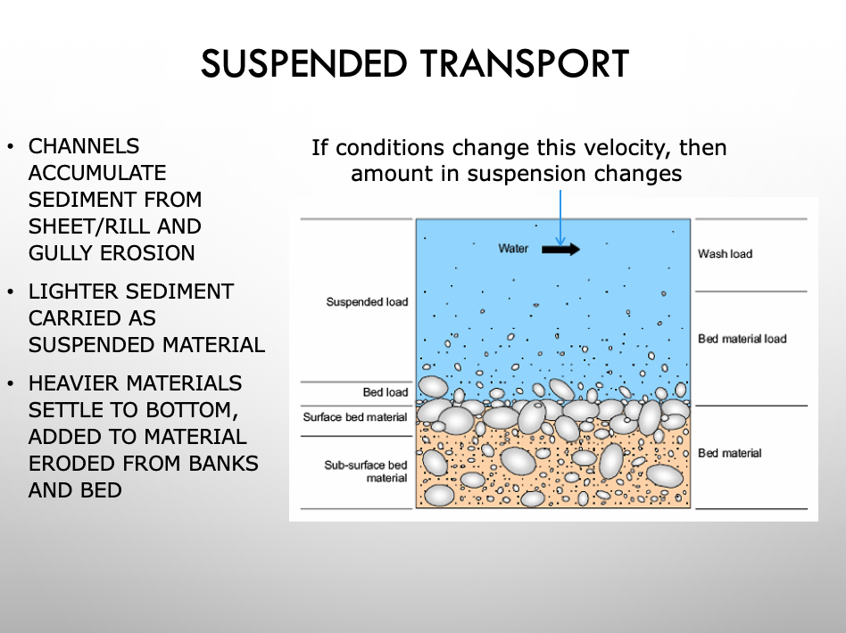
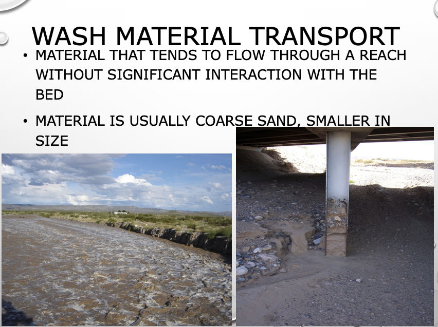
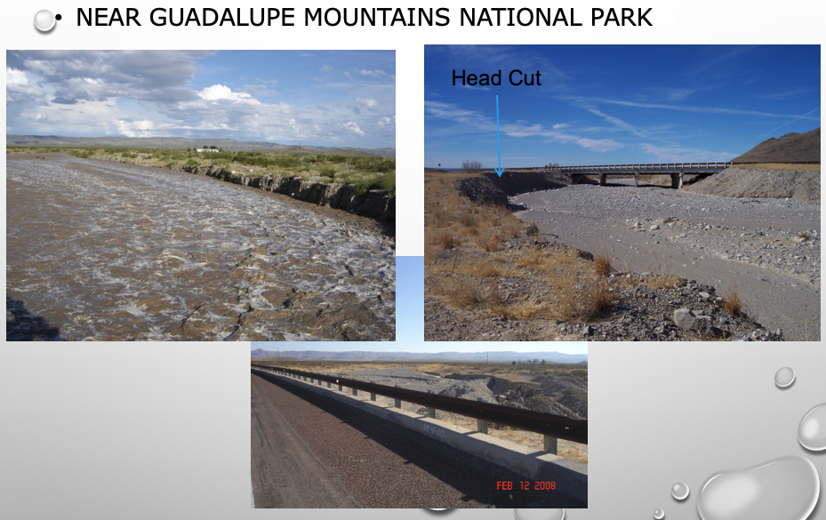
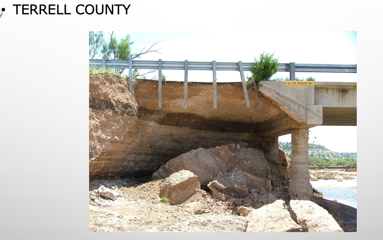
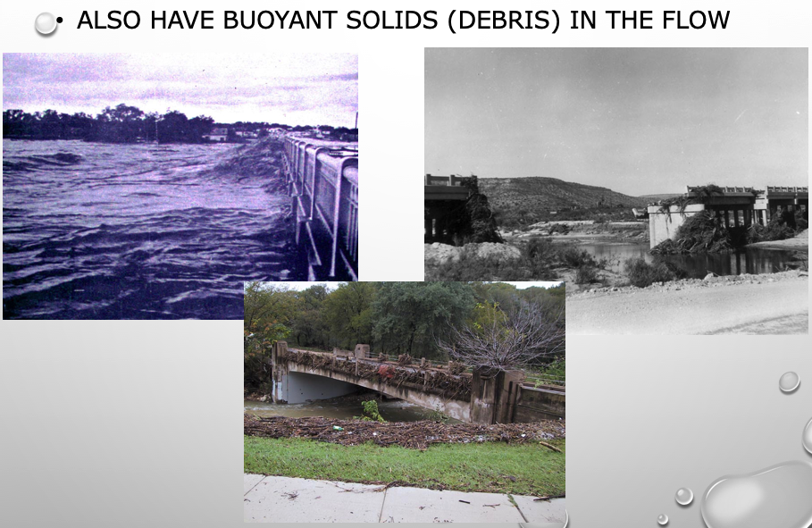
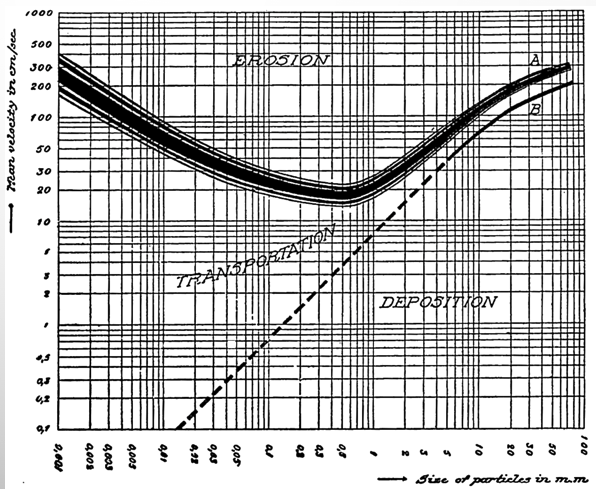
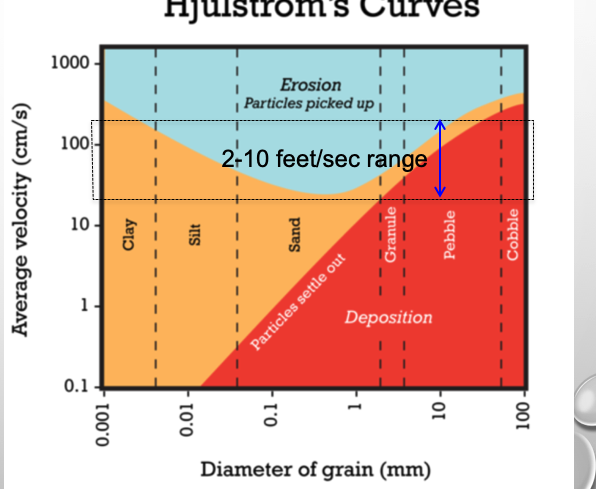

Sediment Transport¶
Erosion and the flow of water in rivers and streams continually remove bed load material from the bed and banks of the channel and displace them further downstream. Estimations of this solids load transport is important in river engineering, fluvial geomorphology, ecohydrology, and hazard estimation.
Many solids transport (bed load) equations relate metrics such as a characteristic dimension (grain diameter), hydraulic characteristics, and solids density to solids flux. These equations, however, exhibit inadequate estimation performance for a variety of reasons (Recking, 2010). The equations themselves are often the result of regression analysis on variables thought to explain solids flux behavior and are derived from data collected in flume studies and some river studies.
Go through Mays Ch 18 and point out relevant parts
Go through Design Guidance and show pictures of physical model examples
What is Sediment?¶
Matter that settles to the bottom of a liquid
May be particles that are derived from rocks, biological materials, or chemical precipitates
Storm water sediments typically are a mix of materials, including pavement dust, natural soils, vehicle rust particles, tire dust particles, oils, pesticides, fertilizer
Transported by water or wind



Bed Material Transport¶
Stream bed load is part of total sediment load that moves along bottom of channel
Sediment particles roll, bounce, or slide along bottom
When stream has ability to re-suspend, some of particles will move
When it loses ability to carry particles in suspension, they will drop out again
Depends on local stream velocity and settling velocity of individual particles




Hjulstrom Diagram¶

Relates velocity and grain diameter to mobilization potential.
A prettier one, with solid sizes related to common soil textures is:

References¶
Cleveland, T.G., and A. Fashokun. 2006. Construction-associated solids loads with a temporary sediment control BMP. American Society of Civil Engineers, Journal of Construction Management, Vol. 132, No. 10, pp 1122-1125. 6.Muscara, J.P., (1997). Field Evaluation of Selected Highway Construction Temporary Sediment Controls for Stormwater Pollution Prevention Plans. Master’s Thesis, Department of Civil and Environmental Engineering, University of Houston, Houston, Texas.